용접기사 (2014-08-17 기출문제)
1과목: 기계제작법
1. 구성인선(built-up edge)이 생기는 것을 방지하기 위한 대책은?
- 경사각을 작게 한다.
- 절삭깊이를 적게 한다.
- 절삭속도를 작게 한다.
- 절삭공구의 인선을 무디게 한다.
(정답률: 64%)

2. 소성 가공 방법이 아닌 것은?
- 컬링(curling)
- 코이님(coining)
- 호팅(hoing)
- 엠보싱(embossing)
(정답률: 57%)
3. 단면감소율, 다이의 각도, 윤활, 가공속도 등의 요소와 관계되는 소성가공은?
- 압축가공
- 압연가공
- 인발가공
- 주조가공
(정답률: 60%)
4. 와이어 컷(wire cut) 방전가공의 특성 중 틀린 것은?
- 가공물의 형상이 복잡함에 따라 가공속도가 변한다.
- 복잡한 형상의 가공물을 높은 정밀도로 가공할 수 있다.
- 표면거칠기가 양호하다.
- 담금질강과 초경합금의 가공이 가능하다.
(정답률: 38%)
5. 그림과 같은 고정구에 의하여 테이퍼 1/30의 검사를 할 때 A로부터 B까지 다이얼 게이지를 이동시키면 다이얼 게이지의 지시눈금의 차는?
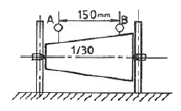
- 1.5 mm
- 2.5 mm
- 3.0 mm
- 4.0 mm
(정답률: 57%)
6. 용접부의 비파괴 검사법이 아닌 것은?
- 굽힘 검사
- 자분 시험
- 초음파 시험
- X-선 투과 시험
(정답률: 82%)
7. 판재에서 펀치로 소정의 모양으로 뽑아낸 것이 제품일 때의 전단가공은?
- 엠보싱(embossing)
- 펀칭(punching)
- 브로칭(broaching)
- 블랭킹(blanking)
(정답률: 42%)
8. NC 프로그래밍에서 이송을 지령시간 동안 정지시키는 기능은?
- 옵셔널 블록 스킵(optional block skip)
- 드웰(dwell)
- 옵셔널 스톱(optional stop)
- 프로그램 스톱(program stop)
(정답률: 50%)
9. CNC선반에서 지름이 50mm인 둥근 봉을 절삭속도 62.8m/min이고 절삭깊이가 5mm, 이송을 0.2mm로 하여 길이 400mm를 절삭 시 가공 시간은 약 몇 분인가?
- 3분
- 4분
- 5분
- 6분
(정답률: 36%)
10. 특수 성형가공에서 다이에 금속을 사용하는 대신 고무를 사용하는 성형 가공법은?
- 하이드로폼법(hydroform process)
- 마폼법(marforming)
- 인장성형법(stretch forming)
- 폭발설형법(explosive forming)
(정답률: 60%)
11. 케이스 하이닝(case hardening)의 설명으로 옳은 것은?
- 고체 침탄법을 말한다.
- 가스 침탄법을 말한다.
- 액체 침탄법을 말한다.
- 침탕 후 담금질 열처리를 말한다.
(정답률: 60%)
12. 소성가공의 설명으로 옳지 않은 것은?
- 재료의 사용량을 최대로 절약할 수 있다.
- 절삭가공이 소성가공보다 생산성이 높다.
- 보통 부물에 비하여 성형된 치수가 정확하다.
- 금속의 결정조직을 개량하여 강한 성질을 얻게 된다.
(정답률: 56%)
13. 방전가공의 특징이 아닌 것은?
- 가공물의 경도와 관계없이 가공이 가능하다.
- 전극이 필요하다.
- 가공 부분에 변질 층이 남는다.
- 전극 및 가공물에 큰 힘이 가해진다.
(정답률: 50%)
14. 유동형(flo type) 칩이 발생되는 조건이 아닌 것은?
- 절삭깊이가 작을 때
- 절삭속도가 빠를 때
- 연성의 재료가 가공할 때
- 공구의 윗면 경사각이 작을 때
(정답률: 56%)
15. 게이지 블록의 종류가 아닌 것은?
- 요한슨형
- 호크형
- 플러그형
- 캐리형
(정답률: 52%)
16. 전기 도금의 반대현상으로 가공물을 양극(陽極)에 전기저항이 적은 구리, 아연을 음극(陰極)에 연결하고 용액에 침지하고 통전하여 금속표면의 미소 돌기부분을 용해하여 거울면 상태로 가공하는 것은?
- 전해연마
- 수퍼피니싱
- 전주가공
- 방전가공
(정답률: 54%)
17. 주물이 대형이고 제작 개수가 적은 경우 재료와 가공비를 절약하기 위하여 주요 부분만 형상을 만들고 그 사ㅣ에 점토나 모래 등으로 채워 현형을 만들어 사용하는 목형은?
- 골격형(skeleton pattern)
- 부분형(section pattern)
- 단체형(one poece pattern)
- 회전형(sweepong pattern)
(정답률: 52%)
18. 에나멜이나 페인트 도장 철판에 인산염 피막을 만드는 방청피막법은?
- 철강 산화법
- 고온 산화법
- 파커라이징
- 약품 산화법
(정답률: 54%)
19. 철강의 대기 중 부식방지를 목적으로 표면을 경화하기 위해 세라다이징에 이용되는 원소는?
- Ni
- Si
- Cr
- Zn
(정답률: 54%)
20. 주물의 일부분에 불순물이 집중되든가 성분ㅇ 국부적으로 치우쳐 있는 현상은?
- 편석
- 변형
- 기공
- 수축공
(정답률: 74%)
2과목: 재료역학
21. 다음 중 체적계수(bulk modulus)를 나타낸 식은? (단, E는 탄성계수, G는 전단탄성계수, v는 포아송비이다.)
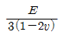
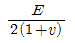
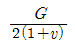
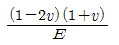
(정답률: 26%)
22. 카스탈리아노(castigliano) 정리의 일반형을 표시한 식으로 옳은 것은? (단, δ=처짐량, U=변형에너지, E=탄성계수, I=단면2차모멘트, P=작용하중 이다.)
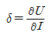
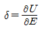
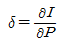
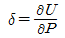
(정답률: 30%)
23. 길이가 ℓ인 단순보 AB의 한 단에 그림과 같이 모멘트 M이 작용할 때, A 단의 처짐각 θA는? (단, 탄성계수는 E, 단면 2차 모멘트는 I이다.)
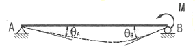
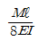
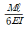
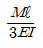
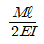
(정답률: 32%)
24. 그림과 같은 삼각형 단면의 X-X축에 대한 관성모멘트(단면 2차모멘트)는?
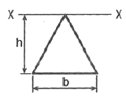
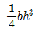
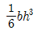
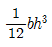
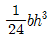
(정답률: 27%)
25. 극한간도가 210MPa인 회주철 축이 안전계수 Sf=1.2일 때, 토크 500Nㆍm를 전달한다. 요구되는 축의 최소 지름 d(mm)는?
- 12mm
- 18mm
- 25mm
- 30mm
(정답률: 40%)
26. 그림과 같은 분포 하중을 받는 단순보의 반력 RA, RB는?
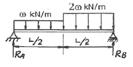
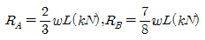
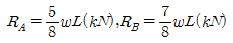
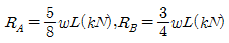
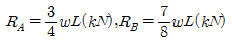
(정답률: 41%)
27. 길이 15m, 지금 10mm의 강봉에 8kN의 인장 하중을 걸었더니 탄성 변형이 생겼다. 이 때 늘어난 길이는? (단, 이 강재의 탄성계수 E=210GPa이다.)
- 0.073mm
- 7.3mm
- 0.73mm
- 7.3mm
(정답률: 18%)
28. 그림과 같이 2개의 본 AC, BC를 힌지로 연결한 구조물에 연직하중(P) 800N이 작용할 때, 봉 AC 및 BC에 작용하는 하중의 크기 T1, T2는 각각 몇 N인가? (단, 봉 AC 와 BC의 길이는 각각 4m와 3m이며, A와 B의 길이는 5m이다. 또한 봉의 자중은 무시한다.)
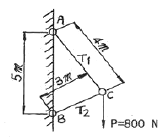
- T1=640, T2=480
- T1=480, T2=406
- T1=800, T2=640
- T1=800, T2=480
(정답률: 39%)
29. 지금이 22mm인 막대에 25kN의 전단하중이 작용할 때 0.00075rad의 전단변형율이 생겼다. 이 재료의 전단탄성계수는 약 몇 GPa인가?
- 87.7
- 114
- 33
- 29.3
(정답률: 27%)
30. 그림과 같이 플랜지와 웨브로 구성된 I형 보 단면에 아래 방향으로 횡전단력 V가 작용하고 있다. 이 단면에서 V에 의해 발생되는 전단응력이 가장 큰 점의 위치는?
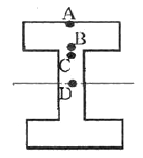
- A
- B
- C
- D
(정답률: 64%)
31. 그림과 같이 길이 ℓ의 레일(rail)이 단순지지 되어 있다. 차륜사이의 거리 d, 무게 W의 차량이 레일 위를 이동할 때 앞 차륜이 어느 위치에 올 때 최대 굽힘 모멘트가 일어나는가?
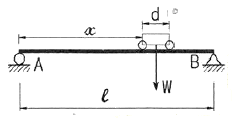
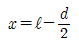
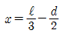
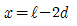
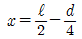
(정답률: 25%)
32. 그림과 같이 길이(L)가 같은 두 외팔보에서 자유단자에서의 최대 처짐을 각각 δ1, δ2라 할 때 처짐의 비 δ2/δ1의 값은? (단, 아래쪽 외팔보에서 작용하는 분포하중(w)은 P=wL을 만족한다.)
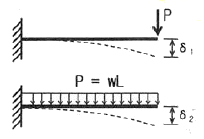
- 2/3
- 3/8
- 2/5
- 5/16
(정답률: 41%)
33. 높이 L, 단면적 A인 장주의 세장비는? (단, I는 단면 2차모멘트이다.)
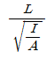
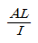
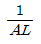
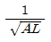
(정답률: 62%)
34. 그림과 같은 하중을 받는 정사각형(10cm×10cm)단면봉의 최대인장응력은 몇 MPa인가?
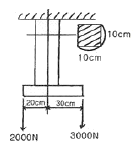
- 2.3
- 3.1
- 3.5
- 4.1
(정답률: 19%)
35. 5cm×10cm 단면의 3개의 목재를 목재용 접착제로 접착하여 그림과 같은 10cm×15cm의 사각 단면을 갖는 합성보를 만들었다. 접착부에 발생하는 전단응력은 약 몇 MPa인가? (단, 이보의 길이는 2m이고, 양단은 단순지지이며 중앙에 P=800N의 집중하중을 받는다.)
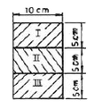
- 77.6
- 35.5
- 82.4
- 160.8
(정답률: 32%)
36. 직경이 d인 중심축에 비틀림 모멘트 T가 작용하고 있다면 이 중심축에 작용하고 있는 비틀림 응력 r은 얼마인가?
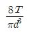
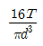
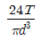
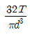
(정답률: 62%)
37. 어떤 요소가 평면 상태 하에 σx=60MPa, σy=50MPa, τxy=30MPa을 받고 있다. 이때 주응력 σ1과 σ2는 각각 약 몇 MPa인가?
- σ1≒67.9, σ2≒51.3
- σ1≒62.4, σ2≒45.6
- σ1≒85.4, σ2≒24.6
- σ1≒88.9, σ2≒32.6
(정답률: 36%)
38. 400rpm으로 회전하는 바깥지름 60mm, 안지름 40mm인 중공 단축면의 허용 비틀림 각도가 1° 일 때 이 축이 전달할 수 있는 동력의 크기는 몇 kW인가? (단, 전단 탄성계수 G=80 GPA, 축 길이 L=3m이다.)
- 15
- 20
- 25
- 30
(정답률: 18%)
39. 지금 12mm, 표점거리 200mm의 연강재 시험편에 대한 인장시험을 수행하였다. 시험편의 표점거리가 250mm로 늘어났을 때, 이 연강재의 신장율(%)은?
- 10%
- 20%
- 25%
- 50%
(정답률: 53%)
40. 단면적이 2cm×3cm이고, 길이 1.5m이 연강봉에 인장하중이 작용하였을 때 축적된 탄성에너지의 크기는 42Mㆍm이다. 이 때 늘어난 길이는 몇 cm인가? (단, 탄성계수 E=210GPa 이다.)
- 0.1
- 0.15
- 0.2
- 0.25
(정답률: 34%)
3과목: 용접야금
41. 금속의 격자 결함 중 면 결함(plane defect)에 해당하는 것은?
- 원자공공(vacancy)
- 전위(dislocation)
- 주조결함(수축공 및 기공)
- 적층결함(stacking fault)
(정답률: 40%)
42. 탄산가스 아크 용접재료인 솔리드 와이어(solid wire)제조시 탈산제로 사용하는 원소는?
- O, N
- H, O
- Mn, Si
- W, N
(정답률: 72%)
43. 금속의 공통적인 특성으로 틀린 것은?
- 비중이 크고 광택을 갖는다.
- 열과 전기의 양도체이다.
- 솟ㅇ변형 및 가공성이 없다.
- 수은을 제외하고는 상온에서 고체이며 결정체이다.
(정답률: 78%)
44. 강재의 용접성은 강의 열 영향부의 최고경도에 대한 탄소당량에 관계되는데 그 탄소 당량이 얼마이하에서 양호한 용접성을 가질 수 있는가?
- 0.4%
- 0.7%
- 0.9%
- 1.1%
(정답률: 76%)
45. 상온에서 순철(Fe)의 결정격자는?
- 면심입방격자
- 체심입방격자
- 조밀육방격자
- 면심정방격자
(정답률: 66%)
46. 강을 담금질할 때 잔류 오스테나이트를 마텐자이트화라기 위하여 0℃ 이하로 냉각처리 하는 것은?
- 구상화처리
- 표준화처리
- 서브제로처리
- 고용화처리
(정답률: 65%)
47. 강력한 탈산제를 첨가하여 충분히 탈산시킨 강괴로 고합 금강의 제조에 사용되는 것은?
- 킬드강
- 캡드강
- 림드강
- 세미킬드강
(정답률: 59%)
48. 탄소강이 보톤 200~300℃에서 연신율과 단면 수축률이 상온보다 저하되어 깨지기 쉬운 성질을 나타내는 취성은?
- 풀림취성
- 적열취성
- 저온취성
- 청열취성
(정답률: 50%)
49. 페라이트 조직의 특성으로 옳은 것은?
- Fe3C의 금속간 화합물이다.
- 상온에서 강자성이다.
- 시멘타이트보다 매우 강하다.
- 마텐자이트 조직이라고도 부른다.
(정답률: 59%)
50. 다음 중 강자성체 금속에 해당되는 것은?
- Cu, Ag
- Au, Zn
- Su, Bi
- Fe, Ni
(정답률: 63%)
51. Fe-C 평형상태도에서 공정점의 탄소량은 약 몇 %인가?
- 0.025%
- 0.8%
- 2.1%
- 4.3%
(정답률: 45%)
52. 파면에 은백색의 빛이 나고 여린 양상을 보이며 결정학적으로 벽개형(cleavage) 파괴는?
- 연성파괴
- 취성파괴
- 전성파괴
- 인성파괴
(정답률: 66%)
53. 다음 중 금속결정의 격자구조가 아닌 것은?
- 체심입방격자
- 면심입방격자
- 세밀이방격자
- 조밀육방격자
(정답률: 58%)
54. 가공한 금속을 어떤 온도로 유지하면 시간의 경과에 따라 경도나 항복강도가 상승하는 현상은?
- 상호작용
- 변형시효
- 석출시효
- 층상경화
(정답률: 57%)
55. 열처리의 향온 변태 곡성과 관련 없는 것은?
- 온도, 시간, 변태곡선을 나타내는 것이다.
- 소재를 항온열처리하면 조직은 레데뷰라이트가 된다.
- 일반적으로 탄소함유량이 적을수록 Ms 온도는 올라간다.
- 변태곡선의 모양이 S자, C자 형태로 나타나며, S곡선, C곡선이라고 한다.
(정답률: 43%)
56. 오스테나이트계 스테인리스강의 입계 부식 방지법으로 첨가하는 원소가 아닌 것은?
- Ti
- Ta
- W
- Nb
(정답률: 34%)
57. 열처리방법과 그 내용이 일치하지 않는 것은?
- 뜨임(tempering)-인성을 부여한다.
- 풀림(annealing)-재질의 경도를 향상시킨다.
- 담금질(quenching)-급냉시켜 재질을 경화시킨다.
- 풀림(normalizing)-소재를 일정온도로 가열 후 공냉시켜 조직을 표준화한다.
(정답률: 71%)
58. 탈활반응의 진행이 쉽게 이루어지는 상태는?
- 용융슬래그가 중성일 때
- 용융슬래그의 산성이 높을 때
- 용융슬래그의 염기도가 높을 때
- 용융슬래그의 대기 중에 있을 때
(정답률: 49%)
59. 용접 중에 발생한 기포가 응고 시에 이탈하지 못하고 잔류한 것은?
- 편석
- 기공
- 은점
- 선상조직
(정답률: 64%)
60. 실루민 합금으로 맞는 것은?
- Al-Cu계
- Al-Si계
- Al-Mg계
- Al-Cu-Mg계
(정답률: 55%)
4과목: 용접구조설계
61. 인장 시험기를 사용하여 측정할 수 없는 것은?
- 잔면 수축률
- 연신율
- 충격값
- 인장강도
(정답률: 59%)
62. 탄산가스아크 용접 후 열영향부에 대한 샤르피 충격시험을 실시할 경우 충격값이 규정된 값보다 낮게 측정되는 주된 원인은?
- 용접 입열량의 과대
- 실드 가스의 불량
- 그루브의 청소불량
- 용가재의 부적합
(정답률: 38%)
63. 용접부의 보조기호 표시 중 특별히 다듬질방법을 지정하지 않을 경우 사용하는 것은?
- G
- M
- F
- C
(정답률: 36%)
64. 용접변형의 종류에서 면외 변형의 종류에 속하는 것은?
- 가로수축
- 세로수축
- 좌굴변형
- 회전변형
(정답률: 59%)
65. [그림]에 의한 브리넬경도 값을 나타내는 식은?
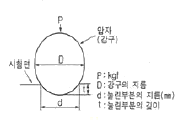
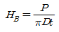
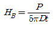
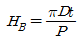
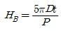
(정답률: 54%)
66. 종판 이상의 홈 설계 시 고려해야 할 사항으로 옳은 것은?
- 홈의 단면적은 가능한 크게 한다.
- 최소 10° 정도는 전후좌우로 용점봉을 움직일 수 있는 홈 각도가 필요하다.
- 루트 반지름을 가능한 작게 한다.
- 루트 간격은 가능한 작게 한다.
(정답률: 59%)
67. 용접이음 설계 시 주의 사항으로 옳은 것은?
- 용착 금속량이 적게 드는 형태를 선택할 것
- 넓은 루트간격과 큰 홈 각도를 선택할 것
- 후판 용접일 경우 X형보다는 V형 가공으로 용착량을 줄일 것
- 용압이 낮은 용접법을 선택하고 2차 가공을 하도록 할 것
(정답률: 52%)
68. 각종 용접이음부에 대한 설명으로 맞는 것은?
- 서브머지드 아크용접의 루트간격은 뒷댐판이 있을 경우 0.8mm 이하로 한다.
- TIG용접에서 4.5mm까지는 I형으로 루트간격을 없이 한다.
- MIG용접은 피복 아크용접보다 루트면을 작게 한다.
- 플라즈마(plasma) 용접은 TIG용접보다 루트면을 크게 한다.
(정답률: 35%)
69. 방사선 투과 사진에서 상(傷)의 질을 나타내는 척도로 사용되는 것은?
- 투과도계
- 자장계
- 진동계
- 전류계
(정답률: 76%)
70. 용접 후 열처리에 대한 설명으로 틀린 것은?
- 저온 균열의 원인이 되는 확산성 수소를 배출시킨다.
- 용접부의 잔류응력을 제거한다.
- 저온 어닐링에서 가열온도는 A1, 변태점 이하가 좋다.
- 풀림 시 가열시간은 1시간 이내로 한다.
(정답률: 36%)
71. 용접 이음의 피로강도에 가장 적게 영향을 미치는 인자는?
- 용접부 재질과 모재 재질의 차
- 용접구조상의 응력집중
- 용접결함의 존재
- 응력제거 풀림
(정답률: 36%)
72. 용접부를 연화하기 위하여 풀림(annealing)하는 경우 재료와 냉각조건이 맞는 것은?
- 탄소강-급냉
- 마텐자이트 스테인리스강-급냉
- 오스테나이트 스테인리스강-서냉
- 중 크롬 스테인리스강-급냉
(정답률: 13%)
73. 잔류 응력의 측정법의 분류 중 정성적 방법에 속하지 않는 것은?
- X선법
- 부식법
- 경도에 의한 방법
- 자기적 방법
(정답률: 23%)
74. [그림]과 같은 맞대기 용접부의 각부 명칠을 연결한 것으로 틀린 것은?
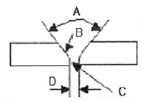
- A : 홈 각도
- B : 개선 깊이
- C : 루트 면
- D : 루트 간격
(정답률: 63%)
75. 용접변형 고정법 중 가열에 의한 소성 변형을 일으키는 방법이 아닌 것은?
- 얇은 판에 대한 점 수축법
- 롤러에 의한 법
- 형재에 대한 직선 수축법
- 후판에 대하여 가열 후 압력을 주어 수냉하는 법
(정답률: 54%)
76. 필릿 용접부의 응력을 계산할 때 목길이가 커질수록 일어나는 현상은?
- 단위면적당 받는 평균응력의 값이 작아진다.
- 단위면적당 받는 평균응력의 값이 커진다.
- 허용응력이 증가한다.
- 평균전단응력이 증가한다.
(정답률: 42%)
77. 고장력강용 피복아크 용접봉에서 일미나트계 용접봉은?
- E5001
- E5016
- E5026
- E5000
(정답률: 57%)
78. 용접부 개선 형상 준비에 따른 설명으로 맞는 것은?
- 개선의 정밀도가 높으면 용접이음의 품질 향상과 개성 준비비가 절약된다.
- 용접결함이 발생하지 않는 범위에서 용접 단위면적을 크게 한다.
- 개선 각도가 너무 크면 용입 불량이나 슬래그 혼입이 쉽다.
- 개선의 정밀도가 맞지 않으면 용착, 기공 등의 결함이 발생한다.
(정답률: 39%)
79. [그림]과 같은 시험편을 이용하여 최대하중을 가해 굽힘강도, 흡수에너지, 파면상태 등을 검사하는 비노드치굽힘 시험은?
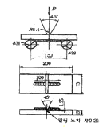
- 리하이 시험(Lehigh test)
- 엣소 시험(Esso test)
- 코머렐 시험(Kommerell test)
- 킨젤 시험(Kinzel test)
(정답률: 54%)
80. 아래보기자세 및 수평필릿 용접에 사용되고 많은 철분을 함유하고 있어 그래비티 용접(gravity welding)에 주로 사용되는 용접봉은?
- E4311
- E4313
- E4316
- E4327
(정답률: 59%)
5과목: 용접일반 및 안전관리
81. 2차 무부하 전압 80V, 아크전압 30V, 아크전류 250V인 교류 용접기를 사용할 때 효율과 역률은 각각 얼마인가? (단, 내부손실은 2.5kW이다.)
- 효율 = 75%, 역률 = 50%
- 효율 = 70%, 역률 = 45%
- 효율 = 50%, 역률 = 75%
- 효율 = 45%, 역률 = 75%
(정답률: 34%)
82. 구리 합금의 용접에 가장 적합한 것은?
- 피복 금속 아크 용접
- 서브머지드 아크 용접
- 탄산가스 아크 용접
- 불활성 가스 아크 용접
(정답률: 45%)
83. 250A 이상 300A 미만의 아크용접을 하려고 한다. 차광유리의 선택으로 가장 적합한 것은?
- 5~6번
- 8~9번
- 11~12번
- 14~15번
(정답률: 65%)
84. 테르밋 용접법의 특징으로 틀린 것은?
- 용접하는 시간이 비교적 짧다.
- 용접작업후 변형이 적다.
- 이동을 할 수 없고 전기가 필요하다.
- 용접용 기구가 간단하고 설비비가 싸다.
(정답률: 67%)
85. 전자빔 용접의 설명으로 틀린 것은?
- 정밀용접을 할 수 있다.
- 깊은 용입을 얻을 수 있다.
- 대기압 하에서 용접할 수 있다.
- 고융점 재료의 용접도 가능하다.
(정답률: 54%)
86. 가스용접용 연료가스 중 산소와 화합할 때 불꽃 온도(℃)가 가장 높은 것은?
- H2
- CH4
- C3H3
- C2H2
(정답률: 60%)
87. 용접법과 전원 특성과의 관계가 잘못 연결된 것은?
- CO2 용접 - 정전류특성
- TIG 용접 - 수하특성
- MOG 용접 - 정전압특성
- 피복 아크 용접 - 수하특성
(정답률: 24%)
88. 고주파 펄스 TIG 용접기의 장점 아는 것은?
- 0.5mm 이하의 박판 용접에서도 안정된 용접이 이루어진다.
- 20A 이하의 저전류에서 아크 발생이 안정하다.
- 좁은 홈 용접에서 아크 교란이 없어 안정하다.
- 전극봉의 소모가 많다.
(정답률: 56%)
89. 아크 용접 피복제의 역할이 아닌 것은?
- 스패터 발생을 적게 한다.
- 용착금속의 급량을 촉진한다.
- 슬래그 제거를 쉽게 한다.
- 용착금속에 필요한 합금원소를 첨가시킨다.
(정답률: 75%)
90. 탄산가스 아크 용접봉의 심선에 첨가되는 탈산제는?
- CaF2
- Mn
- CaO
- H2
(정답률: 50%)
91. 일반적으로 산소-아세틸렌을 사용하여 연강판을 용접할 때 가장 적합한 불꽃은?
- 탄화 불꽃
- 중성 불꽃
- 산화 불꽃
- 모두 사용
(정답률: 35%)
92. 분말 절단에 대한 설명으로 틀린 것은?
- 절단면은 가스절단면 보다 매끄럽다.
- 분말 절단은 콘크리트 절단이 가능하다.
- 분말 절단에는 철분 절단과 용제 절단이 있다.
- 용제 절단 방식은 융점이 높은 크롬-산화물을 제거하는 약품과 절단산소를 함께 공급한다.
(정답률: 22%)
93. 탄산가스 아크 용접에서 와이어 송급 시 아크 길이를 자동으로 자기 제어할 수 있는 특성은?
- 부특성
- 상승특성
- 수하특성
- 전압회복특성
(정답률: 40%)
94. 직류 용접기에 고주파 발생장치를 병용했을 때의 사항으로 옳은 것은?
- 아크 손실이 크다.
- 무부하 전압이 크다.
- 전격위험이 크다.
- 아크 발생이 쉽다.
(정답률: 62%)
95. 밀폐된 탱크 안의 용접작업 시 안전사항으로 옳지 않은 것은?
- 방진 또는 방독 마스크를 착용한다.
- 국소 배기 장치를 설치한다.
- 고압 산소로 청소한다.
- 감전에 주의한다.
(정답률: 68%)
96. 화재 발생의 구성요소 3가지는?
- 점화원, 탄소, 가연성 물질
- 인화점, 산소, 가연성 물질
- 발화점, 질소, 가연성 물질
- 점화원, 산소, 가연성 물질
(정답률: 66%)
97. 일렉크로 슬래그 용접에 관한 설명으로 틀린 것은?
- 용접시간을 단축할 수 있으며 능률적이고 경제적이다.
- 용접 홈의 가공 준비가 간단하고 각 변형이 적다.
- 용융금속의 용착량은 90%가 된다.
- 스패터가 발생하지 않고 조용하다.
(정답률: 35%)
98. 연강용 피복 아크 용접봉의 기호 E4303에서 ‘E'가 의미하는 것은?
- 전기 용접봉
- 피복제 성분
- 심선의 지름
- 용착금속의 강도
(정답률: 56%)
99. 다음 중 절단에 사용하는 에너지원이 다른 하나는?
- 마그 절단
- 산소가스 절단
- 플라즈마 절단
- 아크 톱 절단
(정답률: 28%)
100. 용접작업의 안전사항에 관한 설명 중 틀린 것은?
- 용접작업은 가연성 물질이 없는 안전한 장소를 선택한다.
- 작업 중에는 소화기를 준비하여 만일의 사고에 대비한다.
- 산소병 밸브 및 도관, 취부구는 기름 묻은 천으로 닦는다.
- 유류탱크는 증기 열탕물로 완전히 세척한 후 통풍 구멍을 개방하고 작업한다.
(정답률: 69%)